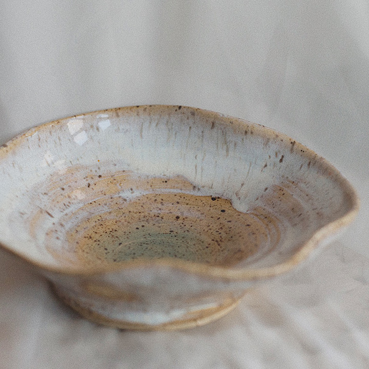
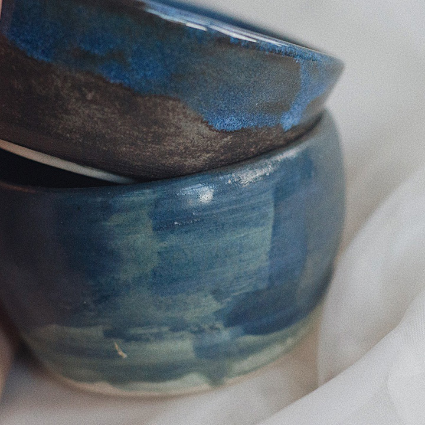
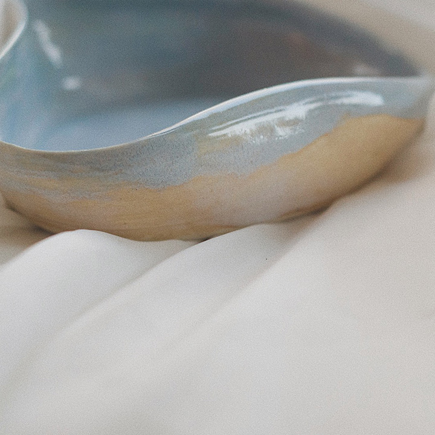
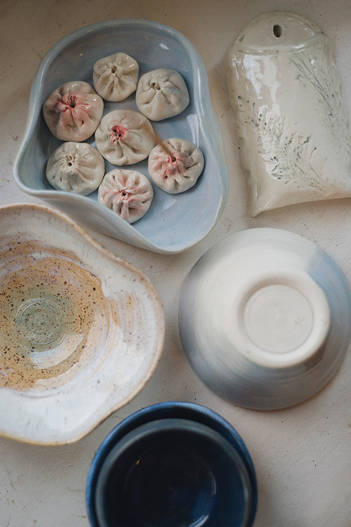
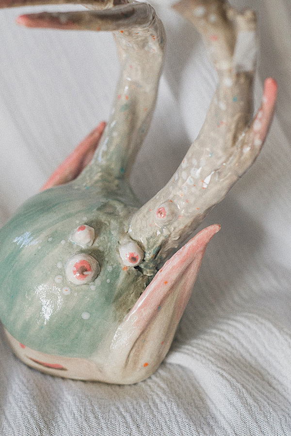
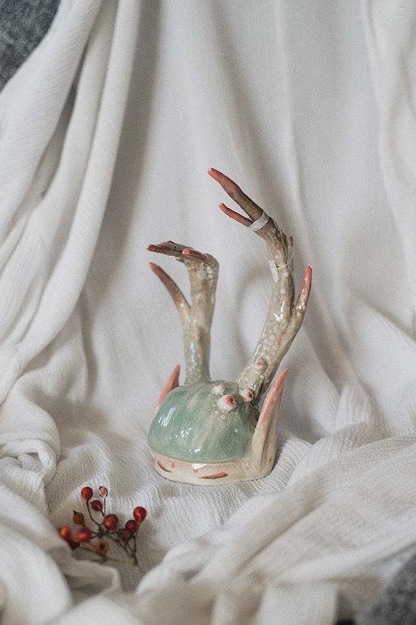
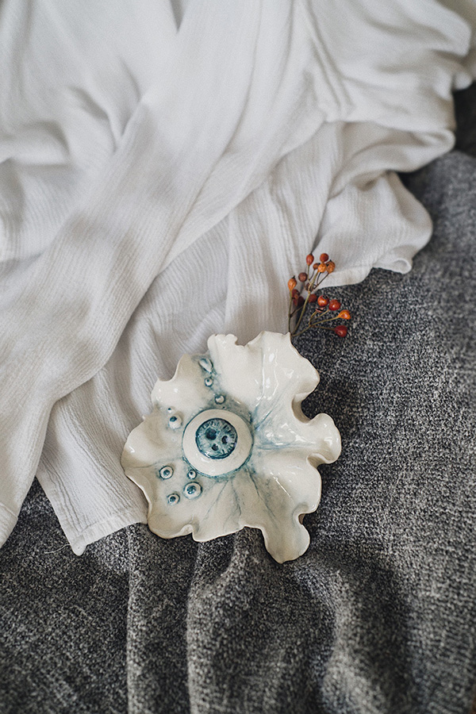
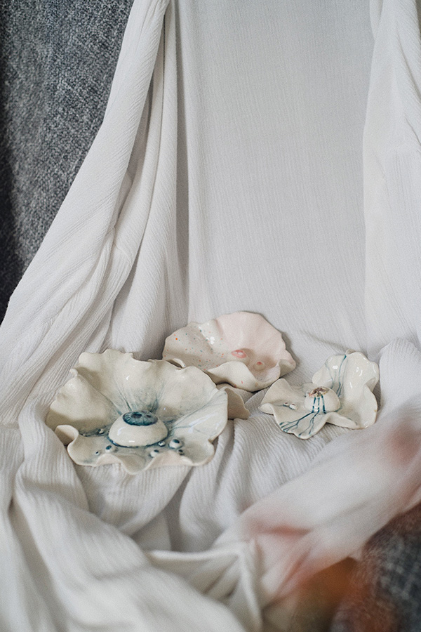
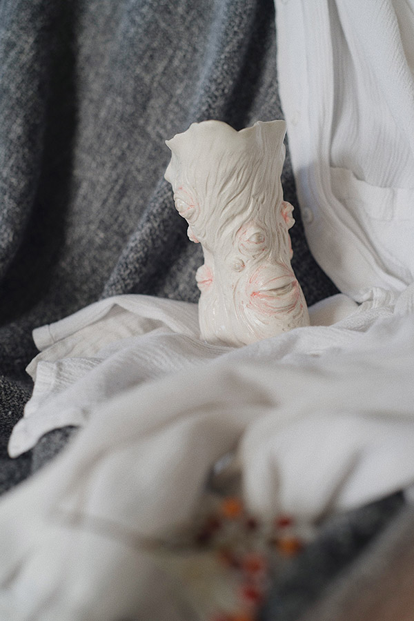

ceramic projects (2020-)
handmade and glazed ceramic



_
amidst covid lockdowns, i started making pottery at home.
slowly like everything else at the time.
_
this is an onging learning project.
_
some of these below are inspired by the healing sketches_ that i have drawn in 2019.
they are born as a part of the seeing your demons ceramic workshop 2020, supported by SKETCH working arts toronto.





